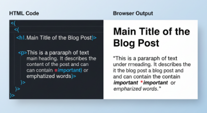

Hey everyone, welcome to this blog post, where I’m going to be explaining what HTML is to my best understanding.
“HTML, Hypertext Markup Language, is the standard markup language used to create and structure content on the web defining the meaning and appearance of text, images, and other elements on a webpage. It serves as the "bones" of a webpage, organizing information through tags and elements, which are then interpreted by web browsers to display content. HTML is a core technology for the web, often used with CSS for styling and JavaScript for interactive functionality.”
This is what you get when you search “What is HTML?” on Google, now it’s not wrong, It’s an okay explanation of what HTML is. Like it’s said, “HTML serves as the bones of a webpage”. The way a body can’t function without a skeleton, a website, or webpage, can’t function without HTML.
Ok now, let’s break it down even further:
HT – HyperText
M – Markup
L – Language
HyperText
HyperText is a non - linear way of organizing information.
Let me explain, Linear text follows a single, predetermined path from beginning to end. The author decides the order, and the reader must follow that sequence to make sense of the content, An example is a novel. While Non-linear text breaks free from this rigid, sequential structure, allowing the reader to choose their own path through the information, An example is a website or a dictionary.
Non – linear text allows users to jump from one piece of content to another by clicking on special text called hyperlinks. The web is built on hypertext, as links connect documents and other resources across the internet.
For example, when you’re reading a book, you read page 1, page 2, page 3, and so on but when you’re reading a document online, you can click on a link that takes you to an entirely different document. With this you create your own unique reading path.
The ability for documents to be infinitely linked and for users to go between them at will, is the entire foundation of the World Wide Web.
Markup
When refering to Markup, you refer to a set of tags used to annotate text, images, and other content for a web browser. These tags "mark up" the content and tell the browser how to display and organize the content. Examples of such tags are:
- <h1> to <h6> are used to display headings, with <h1> being the most important and <h6> being the least important
- <p> is used to display a block of text.
- <strong> is used to display bold text while <em> is used to display text in italics.
- <img> is used to display images.
Markup typically looks like this:
<h1>Main Title</h1>
<h2>Subheading 1</h2>
<p>......Body of text.......</p>
The browser reads these tags and uses them to display the content in the intended format rather than displaying the tag itself.

Language
A language is a system of conventional symbols(spoken, written, or signed) that humans use to communicate. It is a system that allows individuals to express thoughts, feelings, and ideas to one another within a social or cultural group.
In the context of HTML, a language is a system of communication with a defined set of rules and syntax that a computer can read and interpret. It refers to a formal system of instructions and rules used by a computer to organize and present content.
HTML is the specific language that web browsers use to understand and display the content and structure of a web page. HTML is a declarative markup language, not a programming language, which means it uses tags to annotate a document rather than to execute logical commands.
Conclusion
In summary, HTML (HyperText Markup Language) is the non-negotiable foundation for every webpage. It is the declarative markup language that acts as the "bones", or structural skeleton, for every website, using a defined set of tags to organize and annotate content for the browser.
The HyperText component of HTML is what makes the web function, creating a non-linear network of documents connected by hyperlinks. And once you have the structure in place, you’re ready to add the style and bring it fully to life with CSS, and power its actions and logic using JavaScript.
Thank you for reading and have a wondeful rest of your day.